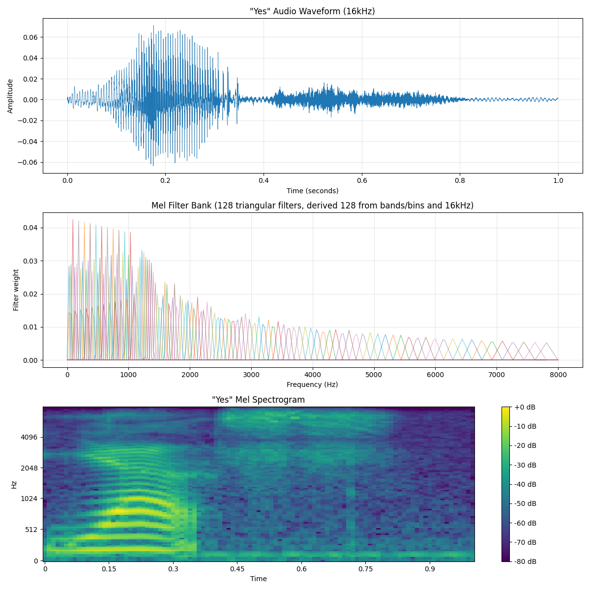
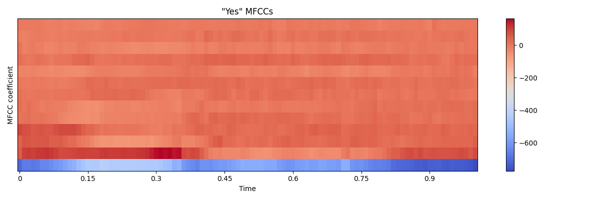

Introduction
Back in 2021, I did signal analysis on the words "Yes" and "No" to determine if it was possible to detect these words using only their frequency characteristics. It was found that there were distinct differences in the frequency domain for these words, but the word detection was imperfect and yielded about an 87% success rate. These notes are to establish the foundation for how the word detection accuracy can be pushed further.
What is a Mel Scale
Turns out Mel isn't a person, but a scale that measures the pitch more closely to how humans actually hear it rather than the frequency. This scale was helpful because humans apparently aren't as sensitive to differences in higher frequencies compared to lower frequencies. This scale will take frequencies and make them more human relatable and the formula to convert Hertz to Mels is:
Where:
- $m$ = The pitch in Mels
- $f$ = The frequency in Hertz (Hz)
Why is a Mel Scale Helpful
What does this actually do for us though? Well, it turns out this conversion helps with feature extraction since it gives less resolution to high frequencies, where we don't need that fine detail to tell sounds apart. It can also help us make something called a Mel spectrogram which gives an amplitude and frequency representation over time. For a Mel spectrogram we do the same steps as a normal spectrogram (Short-Time Fourier Transform and convert amplitude to dB) and we also convert the frequencies to the Mel scale.
How to apply Mel Scale and Make a Mel Spectrogram
To convert to the Mel scale from frequencies, we need Mel bands and a Mel filter bank. The number of Mel bands/bins varies depending on the problem, but it usually is 20, 40, or 128. The Mel bands/bins are just evenly spaced out to fit within your minimum Mel value and maximum Mel value from the signal. Then we can convert the Mel bands/bins centers back to Hertz and round these values to the nearest frequency bin. After that, we create the Mel filterbank (bunch of triangle filters) based on the Mel bands centers that will be applied to the spectrogram. The image below is a "Yes" signal Mel spectrogram that had these steps applied.

Mel-Frequency Cepstral Coefficients
We now have a Mel spectrogram which gives us an amplitude and frequency representation of a signal over time that is more humanly relatable. This is much more helpful, but if we wanted to compact the features/data more then we can find the Mel-Frequency Cepstral Coefficients (MFCC). For the full pipeline to get these coefficients, the signal will first go through framing and windowing then a fast Fourier transform will be applied to each window giving us a power spectrum. Now you apply the Mel filterbank and pass the power spectrum through it. At this point you have a Mel spectrogram, but when taking the log then you'll have dBs. Applying a discrete cosine transform to the log Mel filterbank energies will give you Mel-Frequency Cepstral Coefficients which are usually just 13 coefficients when truncated.

Mel Spectrogram Vs. Mel-Frequency Cepstral Coefficients
MFCCs are helpful since they can compress your Mel spectrogram and also let you focus more on the overall shape of the spectral envelope. This compression is great since it can remove pitch differences so the same word at different pitches will show up the same. The main issue though is that you can't see the specific frequency band anymore and the compression is lossy so you can't recreate the signal when you truncate away coefficients. The loss of specific frequency bands is a big problem for convolutional neural networks because they work by detecting local patterns in the 2D layout. This is where a Mel spectrogram being fed into a CNN is much more helpful since a Mel spectrogram still holds all the data needed.
Sources
The following are sources I used to create these notes: